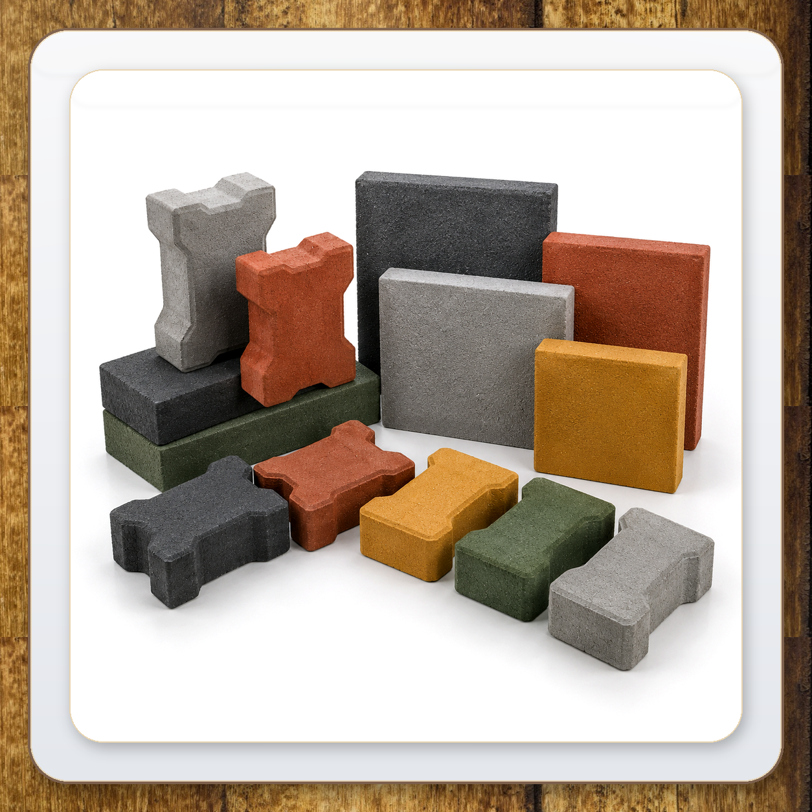

How to Choose Paver Blocks for Driveways in Mysore
Choosing the right paver blocks for your driveway is one of the most important decisions you'll make for your property in Mysore, Karnataka. A well-paved driveway enhances curb appeal, provides long-lasting durability, and adds significant value to your home or business. With Mysore's tropical climate featuring heavy rainfall and intense sunlight, selecting the right interlocking paver blocks is essential for longevity and performance.
At SGD Unique Blocks & Pavers, we manufacture premium quality interlocking paver blocks designed for driveways, walkways, and commercial spaces across Karnataka. In this comprehensive guide, we'll walk you through everything you need to know about choosing the perfect paver blocks for your driveway project in Mysore.
"The right paver blocks can transform your driveway from a simple access path into a stunning architectural feature that lasts for decades. At SGD, we combine German engineering with sustainable innovation to deliver paver blocks that stand the test of time."
1. Consider the Thickness of Paver Blocks
The thickness of paver blocks determines their load-bearing capacity and durability. For driveways in Mysore, thickness is critical because vehicles exert significant weight and pressure on the surface. Here's what you need to know:
- 60mm Paver Blocks: Suitable for pedestrian walkways, patios, and light residential use. Not recommended for driveways with regular vehicle traffic.
- 80mm Paver Blocks: Ideal for residential driveways, parking areas, and light commercial use in Mysore. These blocks can withstand the weight of cars, SUVs, and occasional light trucks.
- 100mm+ Paver Blocks: Recommended for commercial parking lots, industrial areas, and heavy vehicle traffic in Karnataka.
For most residential driveways in Mysore and across Karnataka, 80mm paver blocks offer the perfect balance of durability and cost-effectiveness. Our I-Paver and Zig Zag pavers are available in both 60mm and 80mm thicknesses.
2. Choose the Right Paver Pattern
The pattern of your paver blocks affects both aesthetics and structural integrity. At SGD, we offer several design patterns for driveways in Mysore:
- Zig Zag Paver: Classic interlocking pattern with excellent stability. Ideal for driveways with slopes or curves in Mysore.
- I-Paver: Modern, sleek design with superior interlocking strength. Perfect for contemporary homes in Karnataka.
- Brick Paver: Traditional rectangular pattern that creates a timeless, elegant look for driveways.
- Square Paver: Contemporary geometric pattern suitable for modern architectural styles in Mysore.
Explore our complete range of paver patterns for driveways →
3. Select the Right Colour
Colour plays a crucial role in the overall appearance of your driveway. At SGD, we offer 6 colour variants to match any architectural style in Mysore and Karnataka:
- Natural Grey: Classic and versatile — suits all architectural styles
- Charcoal: Modern, sophisticated, and stain-resistant finish for driveways
- Terracotta Red: Warm, earthy tone for traditional landscapes in Mysore
- Burnt Sienna: Rich, deep brown-red for elegant driveways
- Saffron: Vibrant and energetic — makes any driveway stand out
- Forest Green: Natural, calming tone for garden and park settings
Consider the colour of your home's exterior, surrounding landscape, and personal preference when selecting your paver blocks. Our colour variants are UV-stable and won't fade in Mysore's intense sunlight.

4. Consider Durability and Quality
Not all paver blocks are created equal. At SGD Unique Blocks & Pavers, our interlocking pavers are manufactured using high-strength M30 grade concrete with compressive strength ranging from 30 N/mm² to 50 N/mm². This ensures:
- Superior load-bearing capacity for vehicle traffic on driveways
- Excellent resistance to cracking and weathering in Mysore's climate
- Low water absorption (≤ 5%) for freeze-thaw resistance
- Anti-skid surface finish for safety in wet conditions
- UV stability to prevent fading in direct sunlight
Our state-of-the-art German technology ensures consistent quality across every batch, giving you peace of mind that your driveway will last for years to come.
5. Evaluate the Installation Process
Proper installation is just as important as selecting the right paver blocks. Here's what you need to know for your Mysore driveway project:
- Base Preparation: A well-compacted base of crushed stone and sand is essential for stability
- Edge Restraints: Kerb stones or edge restraints prevent the pavers from shifting over time
- Joint Sand: Polymeric sand between pavers locks them in place and prevents weed growth
- Compaction: Proper compaction ensures a level surface and prevents settling
Contact our team for expert installation advice or to request a site inspection for your Mysore driveway project.
6. Consider the Climate in Mysore
Mysore experiences a tropical climate with distinct wet and dry seasons. Your paver blocks should be able to withstand:
- Heavy rainfall: Our pavers have low water absorption (≤5%) to prevent cracking
- Intense sunlight: UV-stable colours that won't fade over time
- Temperature fluctuations: Frost-resistant for cooler months
Our interlocking paver blocks are engineered to perform in Karnataka's diverse climate conditions.
7. Budget Considerations
While paver blocks are an investment, they offer excellent long-term value compared to other paving options. Consider:
- Initial cost: Quality pavers cost more upfront but last longer
- Maintenance: Paver driveways are low-maintenance compared to concrete
- Repair costs: Individual pavers can be replaced without redoing the entire driveway
- Property value: A well-paved driveway increases your property's value
Request a bulk quotation from SGD Unique Blocks & Pavers for competitive pricing on quality paver blocks for your Mysore driveway.
Conclusion
Choosing the right paver blocks for your driveway in Mysore doesn't have to be complicated. By considering thickness, pattern, colour, durability, installation, climate, and budget, you can select the perfect interlocking pavers for your project.
At SGD Unique Blocks & Pavers, we're committed to delivering premium quality paver blocks manufactured with German engineering and sustainable practices in Mysore. Our interlocking pavers are designed to provide decades of beauty and durability for your driveway.
Ready to start your driveway project in Mysore? Contact us today for product samples, site inspection, or a free quotation.
📍 Location: Kumar Beedu, Bogadi, Mysuru – 570 026, Karnataka
📞 Phone: +91 85500 04554 / +91 85500 06556
✉️ Email: sgduniqueblocksandpavers2026@gmail.com